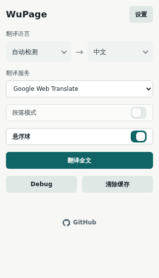
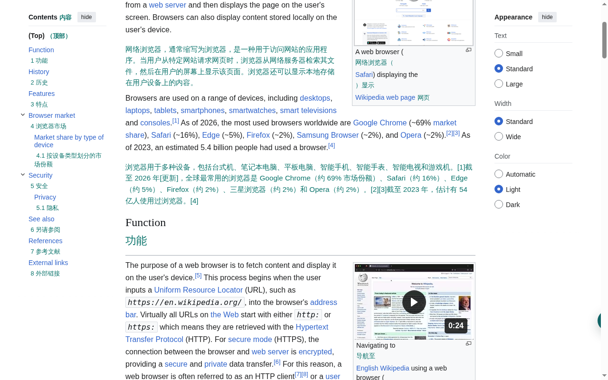

一键全文翻译
点击即可翻译整个页面，无需选中文字。整页内容即刻获得对照译文。
每一项功能都围绕「快速、清晰、可控」的翻译体验打磨。
点击即可翻译整个页面，无需选中文字。整页内容即刻获得对照译文。
保留原文，译文紧跟其后插入，对照阅读更清晰，长文也不迷路。
内置 Google Web、微软、Google Cloud、OpenAI 兼容、HTTP 模板，按需切换。
按「服务+目标语言+原文」缓存，重复内容不重复请求，省额度也省时间。
页面悬浮球，随时唤起翻译，无需打开弹窗，操作路径更短。
可切换段落级翻译，精细化控制翻译粒度，适合逐段精读。
WuPage Translator v1.0.1 真实使用截图 —— 从弹窗控制、选项配置到双语对照效果，每张图本身就是一份使用指南。

点击工具栏 WuPage 图标呼出面板。在「目标语言」与「翻译服务」下拉中选择（推荐先用免 Key 的 Google Web），点击「翻译全文」即可。需要重置时点底部「清除缓存」。
点击弹窗内的「设置」进入。配置通用项（分块大小、并发数、缓存开关、悬浮球显示），并管理各翻译服务商的密钥、参数与连通性测试。

点击「翻译全文」后，原文下方立即插入译文，段落对照便于精读与对照学习。可在弹窗内开启「段落模式」，按需逐段翻译，精细化控制翻译粒度。
四种安装方式,从商店一键安装到源码编译,任你选择。
Edge 用户可从官方 Add-ons 商店一键安装,无需手动加载,支持自动更新。
Chrome Web Store 已提交,正在审核中。上线后可一键安装。在此之前请使用 Edge 商店或 GitHub 下载。
下载已打包的扩展 ZIP,解压后即可加载使用。
wupage-1.0.1-edge.zip（约 1.5 MB）
解压到任意目录。
Chrome 访问 chrome://extensions,Edge 访问 edge://extensions。
在扩展管理页右上角开启「开发者模式」开关。
点击「加载已解压的扩展程序」→ 选择解压后的目录。
克隆仓库、安装依赖、构建产物,完全开源。
git clone https://github.com/mr-wuliu/wupagenpm install && npm run buildChrome 访问 chrome://extensions,Edge 访问 edge://extensions。
在扩展管理页右上角开启「开发者模式」开关。
点击「加载已解压的扩展程序」→ 选择仓库中的 dist/ 目录。